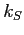
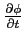

Next: Numerical Resolution of the
Up: Coupling between Monte Carlo
Previous: The Stationary Poisson Equation
Contents
We introduce in this section what I call the "non-stationary" Poisson equation, hereafter NSP equation. This equation is very easy to implment, in a very general numerical context, and very easy to and solve with simple, but very robust, numerical schemes. Let us report in the following the NSP equation
where 
is a constant for giving the right dimensions of the term

, and the other variables have the usual meaning.
It is very easy to show that the solution of this equation will converge, in time, to the solution of the classical Poisson equation described in the precedent paragraph, whatever are the initial potential conditions and with the same boundary conditions. So, if we have a numerical solver for this equation, it will be very easy to get the solution of the classical Poisson equation, simply getting the solution of the NSP equation for very big final time.
Actually it is trivial to develop and implement a numerical solver for NSP. In fact, in the context of finite difference, such a numerical scheme can be obtained applying finite-difference approximations of derivatives to the NSP equation. This is what we will see in the next paragraph.
Subsections
Next: Numerical Resolution of the
Up: Coupling between Monte Carlo
Previous: The Stationary Poisson Equation
Contents
Didier Link
2007-05-18